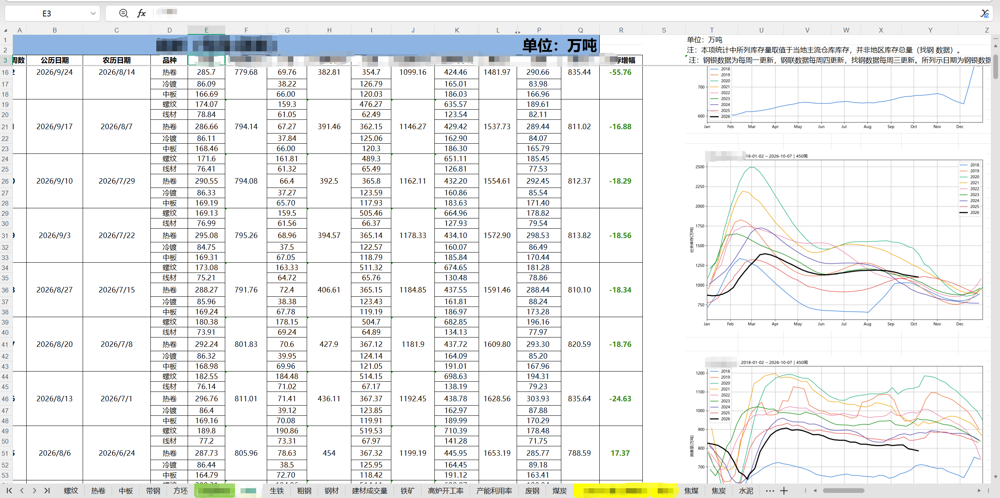
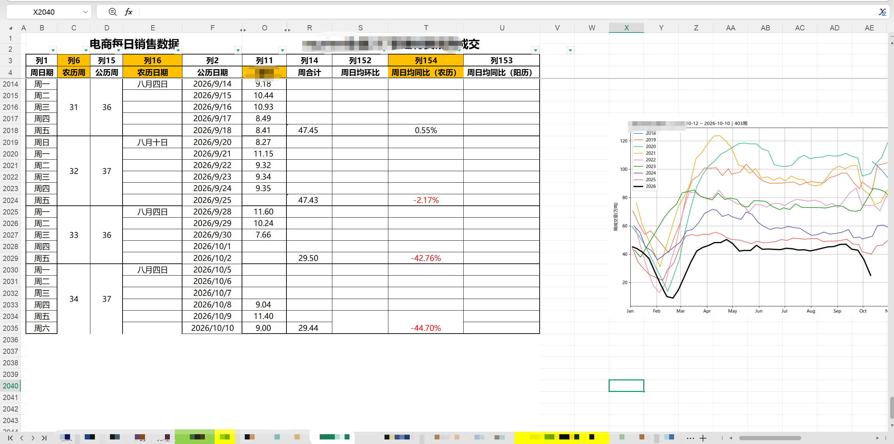

把分散在多张工作表里的市场数据，整理成业务能直接读的东西
钢材市场数据分散在 24 个工作表里，品种、地区、钢厂、规格口径各不相同，业务员查一次价格要翻很多张表。我做的事是把它们统一到一套可对比的结构里，再用 AI 工具加速字段识别、异常检查和趋势摘要。
// 我做了什么
- 维护覆盖线材、螺纹、热卷、中板、带钢、方坯 6 类品种的钢材市场数据库，涉及库存、产量、成交量、铁矿、废钢、煤炭、高炉开工率、产能利用率等 10 类以上指标
- 按品种、地区、钢厂、规格和日期归类日度价格记录，完成价格涨跌、区域价差和阶段趋势的横向对比
- 整理沙钢、中天、永钢 3 家钢厂的旬度线材及建材报价，按钢种、牌号、规格、涨跌和商务政策分类维护
- 用 Excel 与 AI 工具辅助多工作表字段识别、数据归类、异常检查和趋势摘要，制作价格走势、价差变化和指标联动图表
// 当前结果
- 形成「数据整理—AI 辅助分析—图表呈现—业务支持」的工作 SOP
- 参与推进钢材价格分析看板与报价数据异常检查机制建设
- 把市场价格、基差变化与正套持仓数据关联分析，支持报价比较、走势判断和风险敞口识别
- 3.07万条
- 日度价格记录
- 24个
- 工作表市场数据库
- 7,296条
- 钢厂旬度报价记录
- 99个
- 旬次覆盖 2024.01—2026.09
[ 截图已脱敏 · 点击查看大图 ]
数据整理
字段识别
AI 辅助分析
图表呈现
异常检查核验

